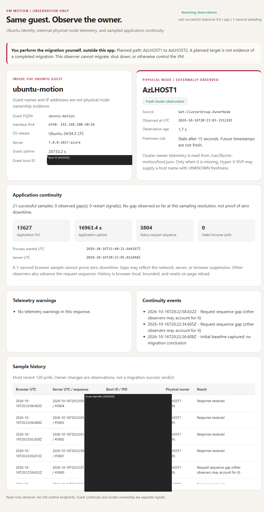
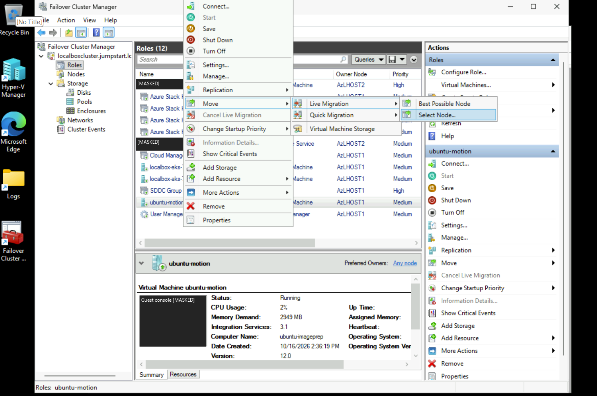

6. Practice VM live migration

6. Connect privately and perform your own live migration
Live migration is a planned move of a running clustered VM between healthy nodes. Keep both AzLHOST1 and AzLHOST2 on. This guide does not ask you to stop a server or simulate an unexpected host failure. Same-cluster live migration uses supported local cluster tools; there is no native Live Migration button in the Azure Local VM portal blade.
6.1 Understand the access layers
| Target | Access path | Credential field retained |
|---|---|---|
| Azure portal | Your authorized Azure account | [MASKED: Azure account] |
| LocalBox-Client outer VM | Portal → Connect → Bastion → VM Password | [MASKED: Windows administrator / password] |
| Azure Local nodes / cluster | Authorized domain management console or source-node console | [MASKED: domain administrator / password] |
| Ubuntu workload | Azure Arc SSH relay plus authorized guest key | [MASKED: SSH private key] |
Bastion Basic opens the outer LocalBox Windows desktop. Inside it, Hyper-V Manager → AzLHOST1 → Connect opens the actual simulated source server console. In a physical deployment, replace that nested-console step with the server's physical or approved out-of-band console. A management workstation on the secured private network can manage the real cluster; there is no outer LocalBox VM.
AzLHOST1 is not a permanent master simply because it is named1. Each clustered VM has its own current Owner Node. Azure Arc registration is not a general-purpose VPN or an automatic RDP route. Optional Bastion IP-based hybrid access requires Standard or higher and actual VPN/ExpressRoute routing; the Basic lab does not provide that capability automatically.
6.2 Open a CLI-only Ubuntu web tunnel
Use PowerShell on your own Windows computer, not Azure Cloud Shell or inside Bastion. Set these variables in each new local terminal. Supply your own identifiers and key authorized during chapter 5; never copy a credential cache from another computer.
$Sub = Read-Host 'Subscription ID'
$Tenant = Read-Host 'Tenant ID'
$Rg = Read-Host 'Existing resource-group name'
$Key = Join-Path $HOME '.ssh\azure-local-vm'
$KnownHosts = Join-Path $HOME '.ssh\azure-local-known-hosts'
$env:AZURE_CONFIG_DIR = Join-Path $HOME '.azure-local-lab'
az account show --subscription $Sub --query user.name -o tsv
# If the isolated session has expired, authenticate to the intended tenant:
# az login --tenant $Tenant --use-device-code
# az account set --subscription $Sub
az connectedmachine show --subscription $Sub --resource-group $Rg `
--name ubuntu-motion --query status -o tsv
Get-NetTCPConnection -State Listen -LocalPort 8088,8089 -ErrorAction SilentlyContinueUse one of the following tunnel targets. Do not open a duplicate on an occupied local port. An existing healthy lab tunnel can be reused.
| Application | Local port | Guest destination |
|---|---|---|
| Recorded Python identity observer | 8088 | 127.0.0.1:8080 |
| New NGINX snapshot example from chapter 5 | 8089 | 127.0.0.1:8081 |
# Recorded observer: keep this terminal open.
az ssh arc --subscription $Sub --resource-group $Rg --name ubuntu-motion `
--local-user azureuser --private-key-file $Key --yes -- `
-N -L 127.0.0.1:8088:127.0.0.1:8080 `
-o BatchMode=yes -o ExitOnForwardFailure=yes `
-o StrictHostKeyChecking=accept-new -o "UserKnownHostsFile=$KnownHosts" `
-o ServerAliveInterval=20 -o ServerAliveCountMax=3# Alternative for the new NGINX example: use another terminal/port.
az ssh arc --subscription $Sub --resource-group $Rg --name ubuntu-motion `
--local-user azureuser --private-key-file $Key --yes -- `
-N -L 127.0.0.1:8089:127.0.0.1:8081 `
-o BatchMode=yes -o ExitOnForwardFailure=yes `
-o StrictHostKeyChecking=accept-new -o "UserKnownHostsFile=$KnownHosts" `
-o ServerAliveInterval=20 -o ServerAliveCountMax=3-N leaves SSH running without a guest shell; a silent terminal is normal. The first loopback address is on your computer, and the second is resolved inside Ubuntu. Arc supplies the private relay; SSH still validates the guest user/key. No public IP or inbound internet SSH rule is required. The tunnel follows the VM's guest identity rather than a fixed source hypervisor.
Open http://127.0.0.1:8088/ for the recorded observer or http://127.0.0.1:8089/ for your newly installed NGINX example, on the same computer running the corresponding tunnel. Ctrl+C closes only that client tunnel, not the VM or application. Re-run the same command to reconnect.
Interactive Ubuntu shell, without a helper script
az ssh arc --subscription $Sub --resource-group $Rg --name ubuntu-motion `
--local-user azureuser --private-key-file $Key --yes -- `
-o StrictHostKeyChecking=accept-new -o "UserKnownHostsFile=$KnownHosts"Inside Ubuntu, use hostname, ip -4 address, cat /proc/sys/kernel/random/boot_id, and curl to the intended guest loopback port. Exit the separate shell with exit. Do not expose private keys or paste complete agent logs into the public site.
6.3 Open the domain-sign-in cluster console through Bastion
- In Azure portal open the lab resource group → LocalBox-Client → Connect → Bastion. Select VM Password, not Microsoft Entra ID sign-in unless you separately configured that method. Enter your Windows lab administrator privately and allow the browser session tab.
- Inside the remote Windows desktop, find Failover Cluster Manager - Domain sign-in. If its icon is shortened, open File Explorer and browse C:\Users\Public\Desktop. This shortcut is on the remote machine, not your laptop.
- Open it and enter the authorized domain credential at the prompt. An ordinary local administrator of the workgroup outer VM is not automatically a domain cluster administrator.
- In the new console, Connect to Cluster → localboxcluster.jumpstart.local → Roles → ubuntu-motion. Do not keep using an older console that previously received access denied.
If the shortcut is missing, create it on the remote desktop with New → Shortcut. The field below retains the credential context without publishing the original account value: replace DOMAIN\AUTHORIZED-USER with your authorized cluster account before using the shortcut target. Name it Failover Cluster Manager - Domain sign-in.
C:\Windows\System32\runas.exe /netonly /user:DOMAIN\AUTHORIZED-USER "mmc.exe C:\Windows\System32\cluadmin.msc"You can also run the same command directly in Command Prompt/PowerShell on the remote desktop. Do not add a password or /savecred to the target. /netonly changes outbound network credentials, so local whoami or Task Manager may still show the desktop account. It does not configure migration delegation or grant new rights.
The historical 0x80070005 failure was corrected by using the existing authorized domain identity rather than expanding cluster ACLs. “Run as administrator” on the local workgroup account alone is not equivalent.
6.4 Verify readiness and capture a baseline
- Require the solution update to be completed, both nodes Up, the Ubuntu role Online, shared CSVs available, sufficient destination capacity, and consistent switch/VLAN configuration.
- Read the actual Owner Node from the cluster. The illustrated forward exercise starts on AzLHOST1; if it is already on AzLHOST2, treat that as the current source and explicitly choose the reverse direction, or stop. Never move it merely to make a screenshot look current. The Installed update, both nodes Up, and Ubuntu on AzLHOST1 were recorded on 17 October 2026, not reverified live on 18 October.
- Keep the web page open. Record hostname, IP, guest boot ID and, for the existing observer, application process start/PID. The NGINX example is a static snapshot: do not treat its install-time timestamp as live telemetry.
- Use the actual cluster Owner Node as host-placement evidence. Guest hostname/IP normally stay the same during migration and cannot identify the hosting physical server by themselves.
# Read-only, from an authorized cluster/node management session:
Get-ClusterNode | Format-Table Name,State
Get-ClusterSharedVolume | Format-Table Name,State
Get-ClusterGroup -Name 'ubuntu-motion' | Format-Table Name,OwnerNode,State
# On the local computer, for the recorded observer only:
$Baseline = Invoke-RestMethod 'http://127.0.0.1:8088/api/status'
$Baseline.guest
$Baseline.physical_owner
$Baseline.application
6.5 You initiate the planned move
- In Failover Cluster Manager → Roles, select only ubuntu-motion.
- Right-click → Move → Live Migration → Select Node.
- Select AzLHOST2 and confirm when you are ready. Do not choose Quick Migration, Shut Down, Turn Off, or an AKS role.
- Wait until the role returns to Running and Owner Node is AzLHOST2.
- Compare the guest/web signals with the baseline. Record any HTTP errors, browser gaps or reconnects rather than assuming zero downtime.
- For the reverse exercise, choose the same Ubuntu role and use the Live Migration menu to move it to AzLHOST1. Leave both hosts on.

If remote GUI authentication fails: use the source-node console
The recorded hosts used CredSSP. A remote runas/netonly console does not automatically solve credential delegation. If you receive 0x8009030E/no credentials, use the source's local console rather than disabling Credential Guard or enabling unconstrained delegation.
- From the LocalBox-Client Bastion desktop, Hyper-V Manager → the freshly observed Owner Node → Connect; the example below assumes that source is AzLHOST1.
- Sign in with an authorized node administrator, open local PowerShell from Server Core/SConfig, and verify hostname matches the current source. Do not use the forward command if ownership changed.
- Run the readiness checks. Execute the separate Move command only when you are ready. The assistant has not executed this demonstration command.
# ON THE SOURCE NODE CONSOLE, not a laptop or ordinary remote PowerShell session:
hostname
Get-ClusterNode | Format-Table Name,State
$Role = Get-ClusterGroup -Name 'ubuntu-motion'
$Role | Format-Table Name,OwnerNode,State
if ($Role.State -ne 'Online' -or $Role.OwnerNode.Name -ine $env:COMPUTERNAME) {
throw 'Stop: run only on the current source console with the role Online.'
}
if ($env:COMPUTERNAME -ine 'AzLHOST1') {
throw 'This forward example expects AzLHOST1; review the reverse direction separately.'
}
if ((Get-ClusterNode -Name 'AzLHOST2').State -ne 'Up') {
throw 'Destination is not Up; no move is permitted.'
}
# Your explicit manual action:
Move-ClusterVirtualMachineRole -Name 'ubuntu-motion' -Node 'AzLHOST2' -MigrationType Live
Get-ClusterGroup -Name 'ubuntu-motion' | Format-Table Name,OwnerNode,StateIn a physical deployment, use the physical/OEM remote console instead of the nested Hyper-V console. To migrate back, use AzLHOST2 as the source. This procedure does not authorize changing cluster authentication or moving unrelated workloads.
6.6 Interpret the result correctly
| Observation | Interpretation |
|---|---|
| Owner becomes AzLHOST2; boot ID and application process start unchanged | Consistent with a memory-preserving live migration; correlate with completed cluster migration and actual HTTP observations. |
| Boot ID changed | The guest rebooted; do not describe that as an uninterrupted live migration. |
| HTTP/tunnel reconnect but same boot ID | A connection gap is not proof of guest reboot. Record the gap and investigate it. |
| Only the guest hostname/IP stayed the same | Insufficient proof of host placement or continuity. Query Owner Node and boot/application identity. |
| Unexpected node failure | Cluster HA may restart a protected VM on the survivor, subject to quorum/storage/capacity. It is not live-memory migration and has downtime. |
| Outer LocalBox-Client fails | Both simulated nodes and management fail together. There is no surviving physical fault domain in this lab. |
The observer polls approximately once per second and marks external ownership stale after 15 seconds. It cannot prove absolute zero downtime or substitute for application-level availability monitoring. For a new deployment without that observer, use Failover Cluster Manager/read-only cluster queries for the owner and guest commands for continuity.
6.7 Define the change window and evidence chain
Inputs: a fresh cluster owner query, healthy source/destination/CSV, supported CPU compatibility and switch configuration, sufficient survivor capacity, no conflicting update/drain/repair, an approved application window, and working independent recovery. The platform operator authorizes the planned move; the application owner sets acceptable request interruption and signs off continuity; the security owner approves the management/delegation path. Your explicit GUI selection or separately executed command initiates the action. Neither this publication nor its screenshots establish a completed manual migration.
Map this stage's ALZ identity decision to AD cluster permissions plus separate Microsoft Entra ID/Arc/guest authorization; connectivity to trusted management and selected migration transport; management to change/incident/restore evidence; security/governance to audit and least privilege; automation to reproducible read-only checks; and tenant/billing/resource organization to the approved lab boundary. The architecture page distinguishes that one-subscription lab from the proposed Local Azure Local Clusters/Applications subscriptions and central Platform services. A management-group policy or Arc connection does not carry the migration's memory traffic.
Before moving, record UTC time, cluster/role identity, actual source and intended target, update/repair state, the guest boot ID, and the exact application process PID/start instant. Boot ID is meaningful only for the same guest identity across the interval; PID alone can be reused. Unchanged process-start evidence applies only to the observed process, not every dependency or request. Record HTTP sampling cadence, response/failure timestamps and timeout limits from the client and, where needed, guest-local checks. One-second sampling can miss shorter interruptions; a browser page is not continuous availability evidence.
The observer's physical-owner label is trustworthy only when its producer successfully queried the actual cluster role and its timestamp is no older than 15 seconds. Stale, missing, future-dated, or clock-skewed samples are unknown, not the last host still owning the VM. Immediately before and after the operation, obtain a fresh authoritative cluster query and correlate it with the observer. Guest hostname/IP cannot supply physical ownership, and the separate NGINX static page cannot replace this producer.
6.8 Troubleshoot without turning a planned move into an outage
Remote cluster management uses approved RPC/cluster management paths and AD authorization; live memory transfer uses the configured Hyper-V transport, such as TCP 6600 or SMB 445, on trusted node networks. The actual transport depends on Network ATC configuration. Review the complete firewall matrix, not an internet-wide port opening. Changes to the ATC-managed switch, simultaneous migration counts or migration-network order must use supported Network ATC paths; do not modify per-host settings as a quick fix.
| Failure | Recovery / rollback boundary |
|---|---|
| Access denied or CredSSP delegation error before submission. | Stop; use the authorized current-source local console. runas/netonly does not solve a second hop. Do not disable Credential Guard, add unconstrained delegation, or broaden tenant/cluster administrators. |
| Migration fails while the original role remains Online. | Leave the workload on its confirmed source; collect operation/cluster events and repair destination capacity/network/compatibility. Do not retry concurrently or turn off a host. |
| Owner changes but SSH or HTTP drops. | Record the gap, inspect guest-local health and reconnect only the client forward if appropriate. A relay reset alone proves neither reboot nor application restart. |
| VM or storage becomes unhealthy. | Stop the exercise and engage the platform incident owner. Do not force another move, alter managed disks locally, or use restart as an unrecorded “repair.” |
A reverse live migration is a new approved operation after fresh health checks, not automatic rollback. It does not undo application writes, recover lost requests, or restore data. If recovery is required, use the separately tested backup/restore runbook with the agreed RPO/RTO. Quorum/witness and S2D/CSV resiliency are not backups; an outer-VM failure removes the nested sources and targets together.
Exit gate: the requested target currently owns an Online role, migration completion is corroborated by cluster events/state, guest boot/process identity is compared within its scope, and measured HTTP gaps are disclosed. Save redacted before/after timestamps and exceptions; remove unneeded privileged sessions and loopback forwards. If any evidence is missing, label continuity or completion unverified, not successful. Production physical fault isolation and restore remain separate tests.